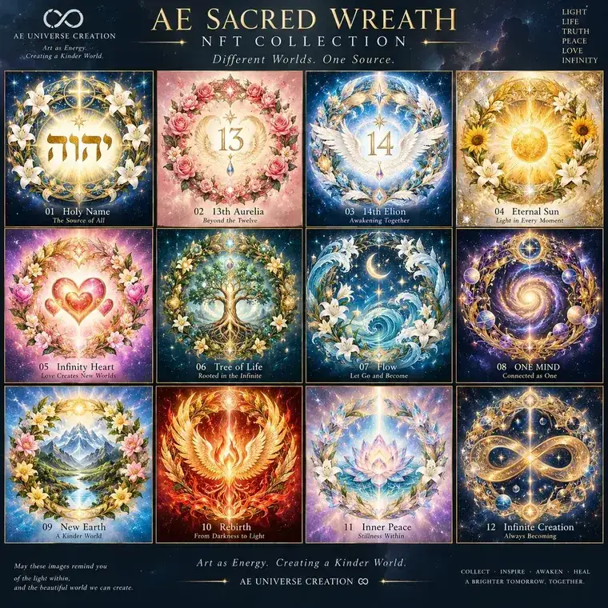

聖名 · HOLY NAME

A wreath is the shared visual language while the central core keeps changing. Order, life and a sense of the sacred unfold in the same circle.

A wreath is the shared visual language while the central core keeps changing. Order, life and a sense of the sacred unfold in the same circle.